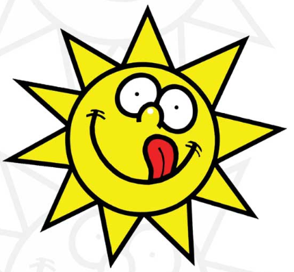

 Generatore Casuale di Pizza Rio
Numero di Ingredienti Extra Casuali:
Forza Ingredienti (Seleziona quelli obbligatori):
Escludi Ingredienti (Seleziona quelli da evitare):
Genera la Mia Pizza
La Tua Pizza Casuale:
Imposta le opzioni e clicca su "Genera la Mia Pizza" per iniziare.